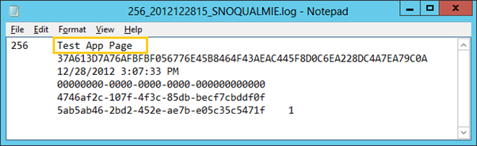

Description
Provided by:
The solution is based on the SharePoint-hosted app template provided by Visual Studio 2012, and logs a custom usage analytics event by using the JavaScriptSP.Analytics namespace.
Prerequisites
This sample requires the following:
-
Visual Studio 2012
-
Office Developer Tools for Visual Studio 2012
-
SharePoint Server 2013 configured to host apps, and with a developer site collection already created.
-
SharePoint 2013 Management Shell (Windows PowerShell)
Key components of the sample
The sample app contains the following:
-
The Default.aspx webpage, which is used to report whether the usage analytics event has been logged successfully.
-
The App.js file in the scripts folder, which is used to log usage analytics events.
All other files are automatically provided by the Visual Studio project template for apps for SharePoint, and they have not been modified in the development of this sample.
Configure the sample
Follow these steps to configure the sample app.
-
On your SharePoint server, start the SharePoint 2013 Management Shell.
-
When the command prompt appears, type the following commands, and press Enter after each line:$SSP = Get-SPEnterpriseSearchServiceApplicationProxy$EventGuid = [Guid]::NewGuid()$EventName = "SP_UsageAnalytics_CustomEvent"$tenantConfig = $SSP.GetAnalyticsTenantConfiguration([Guid]::Empty)$newEventType = $tenantConfig.RegisterEventType($EventGuid, $EventName, "")$tenantConfig.Update($SSP)$EventGuidNote: The final command prints a GUID to the command window. You will need to make a note of this GUID for use in your Visual Studio solution in step 7.
-
Open the SP_UsageAnalytics_js.sln file in Visual Studio 2012.
-
In the Properties window, add the full URL to your SharePoint 2013 server developer site collection or Office 365 developer site to theSite URL property
-
In Solution Explorer, expand the Scripts folder, and then double-click the App.js file.
-
Locate the line of code that reads:
var eventGuid = new SP.Guid("101c16a5-3abd-4020-921f-cc40090c6ff7"); -
Replace the existing GUID with the one generated by the SharePoint 2013 Management Shell.
-
Save your changes.
No other configuration is required.
Build the sample
To build the sample, press CTRL+SHIFT+B.
Run and test the sample
To run and test the sample, do the following:
-
Press F5 to run the app.
-
Sign in to your SharePoint Server 2013 developer site collection or Office 365 developer site if you are prompted to do so by the browser.
The code results in four log files created in one of the Analytics subfolders of<Program Files>\Microsoft Office Servers\15.0\Data\Office Server\. Note the exact path from Figure 1 (your path will have different GUIDs). Also note that it may be a few minutes before these log files appear, because they are created by a timer job.
Figure 1. View of log files

Depending on your farm configuration, these log entries will be incorporated into the usage reports that are available from your site collection at some point in the future. This could be a long time, so as long as you can see similar files to the above, then the sample worked as intended. Figure 2 shows the actual log entry.
Figure 2. Log entry

Troubleshooting
Ensure that you have SharePoint Server 2013 configured to host apps (with a Developer Site collection already created), or that you have signed up for an Office 365 Developer Site configured to host apps.
Change log
First release: January 30, 2013.